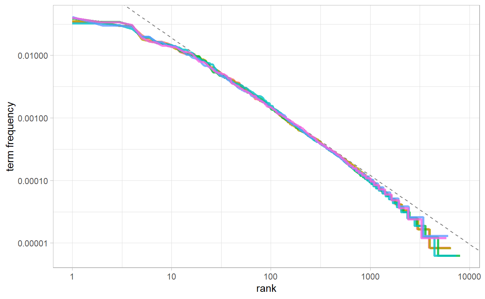
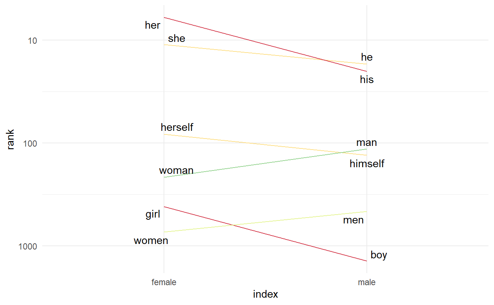
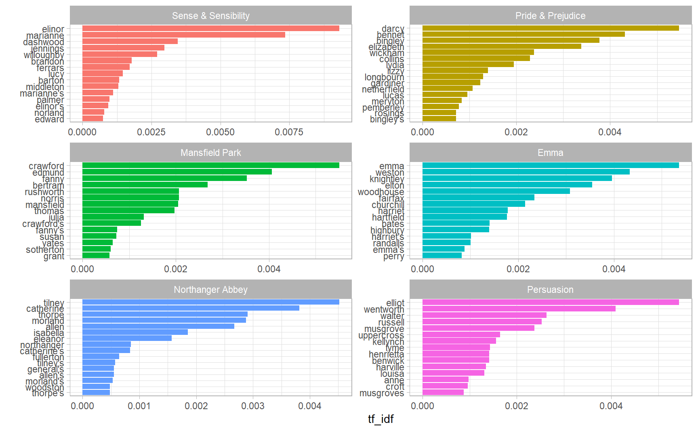

3.1 tf-idf
The logic of tf-idf is that the words containing the greatest information about a particular document are the words that appear many times in that document, but in relatively few others. Calculating tf-idf attempts to find the words that are important (i.e., common) in a text, but not too common. It is widely used in document search and information retrieval tasks. 14 To the extent tf.idf reliably captures what is distinctive about a particular document, it could be interpreted as a feature evaluation technique.
Let \(w = 1, 2, ..., W\) index words and \(\boldsymbol{y}\) denots the W-vector of word counts in the corpus. Let \(i \in I\) index documents in the corpus, let \(\boldsymbol{y^i}\) denotes the W-vector of word counts of document \(i\)， \(y_w^i\) the count of word \(w\) in document \(i\), and \(n^i\) the total count of words in document \(i\).
Term frequency (tf) of a word \(w\) in document \(i\) is defined as its proprotions
\[ f_{w}^{i} = \frac{y_{w}^{i}}{n^{i}} \]
We can see that \(\text{tf}_{ij}\) is essentially a scaling of term counts \(n^{i}\), so that the metric will not be biased against words in lengthy documents.
.Inverse document frequency (idf) of word \(w\) in the corpus is defined as
\[ \text{idf}_i = \log{\frac{|D|}{|{j:t_i \in d_j}|}} \] where \(|D|\) is the number of documents in the corpus, and \(|{j:t_i \in d_j}|\) the number of documents containing word \(i\). We can let \(df_w\) denote the fraction of documents that contain word \(w\) at least once, then idf can be stated as
\[ \text{idf}_i = \log{\frac{1}{df_{w}}} \] and tf-idf, the production of term frequency and document frequency, as
\[ tf.idf_w^i = f_w^i \log{\frac{1}{df_{w}}} \]
3.1.1 Term frequency in Jane Austen’s novels
library(janeaustenr)
book_words <- austen_books() %>%
unnest_tokens(word, text) %>%
add_count(book, name = "total_words") %>%
group_by(book, total_words) %>%
count(word, sort = TRUE) %>%
ungroup()
book_words
#> # A tibble: 40,379 x 4
#> book total_words word n
#> <fct> <int> <chr> <int>
#> 1 Mansfield Park 160460 the 6206
#> 2 Mansfield Park 160460 to 5475
#> 3 Mansfield Park 160460 and 5438
#> 4 Emma 160996 to 5239
#> 5 Emma 160996 the 5201
#> 6 Emma 160996 and 4896
#> # ... with 4.037e+04 more rowsThere is one row in this book_words data frame for each word-book combination; n is the number of times that word is used in that book and total_words is the total words in that book. The usual suspects are here with the highest n, “the”, “and”, “to”, and so forth.
let’s look at the distribution of n / total for each novel, which is the predefined term frequency:
ggplot(book_words) +
geom_histogram(aes(n / total_words, fill = book), show.legend = FALSE) +
xlim(NA, 0.0009) +
facet_wrap(~ book, nrow = 3, scales = "free_y")Figure 3.1: Term Frequency Distribution in Jane Austen’s Novels
3.1.2 Zipf’s law
In Figure 3.1 we see the characteristic long-tailed distribution of term frequency. In fact, those types of long-tailed distributions are so common in any given corpus of natural language (like a book, or a lot of text from a website, or spoken words) that the relationship between the frequency that a word is used and its rank has been the subject of study; a classic version of this relationship is called Zipf’s law, after George Zipf, a 20th century American linguist, which can be stated as.
\[ \text{word rank} \times \text{term frequency} = c \]
where \(c\) is a constant.
freq_by_rank <- book_words %>%
group_by(book) %>%
mutate(rank = row_number(),
`term frequency` = n / total_words)
freq_by_rank
#> # A tibble: 40,379 x 6
#> # Groups: book [6]
#> book total_words word n rank `term frequency`
#> <fct> <int> <chr> <int> <int> <dbl>
#> 1 Mansfield Park 160460 the 6206 1 0.0387
#> 2 Mansfield Park 160460 to 5475 2 0.0341
#> 3 Mansfield Park 160460 and 5438 3 0.0339
#> 4 Emma 160996 to 5239 1 0.0325
#> 5 Emma 160996 the 5201 2 0.0323
#> 6 Emma 160996 and 4896 3 0.0304
#> # ... with 4.037e+04 more rowsZipf’s law is often visualized by plotting rank on the x-axis and term frequency on the y-axis, on logarithmic scales. Plotting this way, an inversely proportional relationship will have a constant, negative slope.
\[ \lg{(\text{term frequency})} = - \lg{(\text{term frequency})} + \lg{c} \]
freq_by_rank %>%
ggplot(aes(rank, `term frequency`, color = book)) +
geom_line(size = 1.1, alpha = 0.8, show.legend = FALSE) +
scale_x_log10() +
scale_y_log10()
The slope is not quite constant, though; perhaps we could view this as a broken power law with, say, three sections. Let’s see what the exponent of the power law is for the middle section of the rank range.
rank_subset <- freq_by_rank %>%
filter(rank < 500, rank > 10)
rank_subset %>%
lm(log10(`term frequency`) ~ log10(rank), data = .) %>%
summary()
#>
#> Call:
#> lm(formula = log10(`term frequency`) ~ log10(rank), data = .)
#>
#> Residuals:
#> Min 1Q Median 3Q Max
#> -0.11814 -0.01011 -0.00217 0.00928 0.08181
#>
#> Coefficients:
#> Estimate Std. Error t value Pr(>|t|)
#> (Intercept) -0.622569 0.002218 -281 <0.0000000000000002 ***
#> log10(rank) -1.112522 0.000953 -1168 <0.0000000000000002 ***
#> ---
#> Signif. codes: 0 '***' 0.001 '**' 0.01 '*' 0.05 '.' 0.1 ' ' 1
#>
#> Residual standard error: 0.0184 on 2932 degrees of freedom
#> Multiple R-squared: 0.998, Adjusted R-squared: 0.998
#> F-statistic: 1.36e+06 on 1 and 2932 DF, p-value: <0.0000000000000002The \(R^2\) is approximately \(1\), so that we consider the relationship between log word rank and log tf to be \(\lg{\text{tf}} = -1.11\lg{\text{rank}} - 0. 62\).
freq_by_rank %>%
ggplot(aes(rank, `term frequency`, color = book)) +
geom_abline(intercept = -0.62, slope = -1.1, color = "gray50", linetype = 2) +
geom_line(size = 1.1, alpha = 0.8, show.legend = FALSE) +
scale_x_log10() +
scale_y_log10()
We have found a result close to the classic version of Zipf’s law for the corpus of Jane Austen’s novels. The deviations we see here at high rank are not uncommon for many kinds of language; a corpus of language often contains fewer rare words than predicted by a single power law. The deviations at low rank are more unusual. Jane Austen uses a lower percentage of the most common words than many collections of language. This kind of analysis could be extended to compare authors, or to compare any other collections of text; it can be implemented simply using tidy data principles.
3.1.3 Word rank slope chart
Emil Hvitfeldt had a great blog post on how to make a word rank slope chart. This plot is generally designed to visualize the word rank difference of a set of paired words. If a writer is more comfortable using masculine words, then we could expect that “he” has a lower word rank than “she” (words are ranked in an descending order based on counts, as in book_words).
In Jane Austen’s novels, suppose we decide to compare word rank on a set of words related to gender
gender_words <- tribble(
~Men, ~Women,
"he", "she",
"his", "her",
"man", "woman",
"men", "women",
"boy", "girl",
"himself", "herself"
)We unnest 6 books into separate words as usual, and pull() them out as a vector.
ordered_words <- austen_books() %>%
unnest_tokens(word, text) %>%
count(word, sort = TRUE) %>%
pull(word)We then use match() to match individual words to its word rank. The trick is using the logged rank rather the rank itself, otherwise the y scale will be heavily extended by large word rank. scale_y_log10() is not the best option in this case, since we need scale_y_reverse() to put the most frequent words on the top of our plot, and labels on the y axis can be fixed by passing a function to label
gender_words <- gender_words %>%
mutate(male_rank_log10 = match(Men, ordered_words) %>% log10(),
female_rank_log10 = match(Women, ordered_words) %>% log10(),
rank_diff_log10 = male_rank_log10 - female_rank_log10) %>%
pivot_longer(male_rank_log10:female_rank_log10,
names_to = "index",
values_to = "rank") %>%
mutate(label = if_else(index == "male_rank_log10", Men, Women)) %>%
mutate(index = fct_recode(index,
"male" = "male_rank_log10",
"female" = "female_rank_log10"))
limits <- max(abs(gender_words$rank_diff_log10)) * c(-1, 1)
library(ggrepel)
gender_words %>%
ggplot(aes(index, rank, group = Men)) +
geom_line(aes(color = rank_diff_log10), show.legend = FALSE) +
geom_text_repel(aes(label = label)) +
scale_y_reverse(label = function(x) 10 ^ x, breaks = scales::breaks_pretty(n = 3)) +
scale_color_fermenter(type = "div", palette = "Spectral", limits = limits) +
theme_minimal()
3.1.4 The bind_tf_idf() function
The bind_tf_idf() function in the tidytext package takes a tidy text dataset as input with one row per token (term), per document. One column (word here) contains the terms/tokens, one column contains the documents (book in this case), and the last necessary column contains the counts, how many times each document contains each term (n in this example).
book_words <- book_words %>%
select(-total_words) %>%
bind_tf_idf(term = word, document = book, n = n)
book_words
#> # A tibble: 40,379 x 6
#> book word n tf idf tf_idf
#> <fct> <chr> <int> <dbl> <dbl> <dbl>
#> 1 Mansfield Park the 6206 0.0387 0 0
#> 2 Mansfield Park to 5475 0.0341 0 0
#> 3 Mansfield Park and 5438 0.0339 0 0
#> 4 Emma to 5239 0.0325 0 0
#> 5 Emma the 5201 0.0323 0 0
#> 6 Emma and 4896 0.0304 0 0
#> # ... with 4.037e+04 more rowsNotice that idf and thus tf-idf are zero for these extremely common words. These are all words that appear in all six of Jane Austen’s novels, so the idf term (which will then be the natural log of \(1\)) is zero.
Let’s look at terms with high tf-idf in Jane Austen’s works.
book_words %>%
arrange(desc(tf_idf))
#> # A tibble: 40,379 x 6
#> book word n tf idf tf_idf
#> <fct> <chr> <int> <dbl> <dbl> <dbl>
#> 1 Sense & Sensibility elinor 623 0.00519 1.79 0.00931
#> 2 Sense & Sensibility marianne 492 0.00410 1.79 0.00735
#> 3 Mansfield Park crawford 493 0.00307 1.79 0.00551
#> 4 Pride & Prejudice darcy 373 0.00305 1.79 0.00547
#> 5 Persuasion elliot 254 0.00304 1.79 0.00544
#> 6 Emma emma 786 0.00488 1.10 0.00536
#> # ... with 4.037e+04 more rowsProper nouns are often favoured by tf-idf, in this case names of important characters in each novel will generally have high tf-idf value. None of them occur in all of novels, and they are important, characteristic words for each text within the corpus of Jane Austen’s novels.
book_words %>%
group_by(book) %>%
top_n(15) %>%
ungroup() %>%
facet_bar(y = word, x = tf_idf, by = book, nrow = 3)